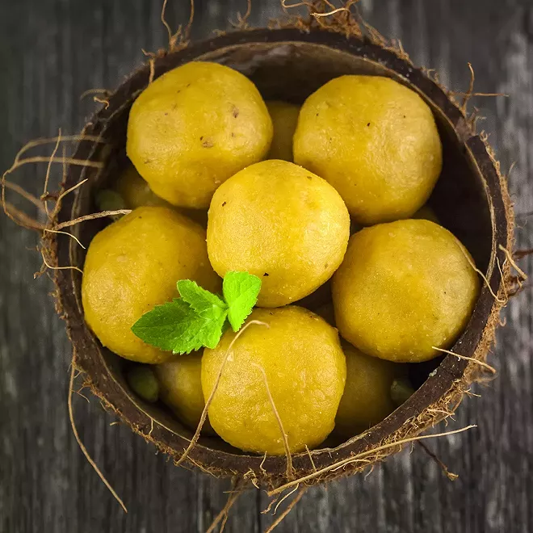

FOUTOU BANANE

Description
Ingrédients
- 1/4 paquet de farine de manioc
- 1/4 manioc
- 1 bananes plantain
Étapes
- Faire cuire les bananes et le manioc épluchés à la vapeur, les piler au mortier (ou au robot).
- Rajouter de la farine de manioc pour obtenir la consistance désirée.
- En général, on forme des grosses boules type pâton avec le foutou, qu'on sert ensuite en accompagnement d'une sauce. On peut le préparer d'avance et le réchauffer à la vapeur.